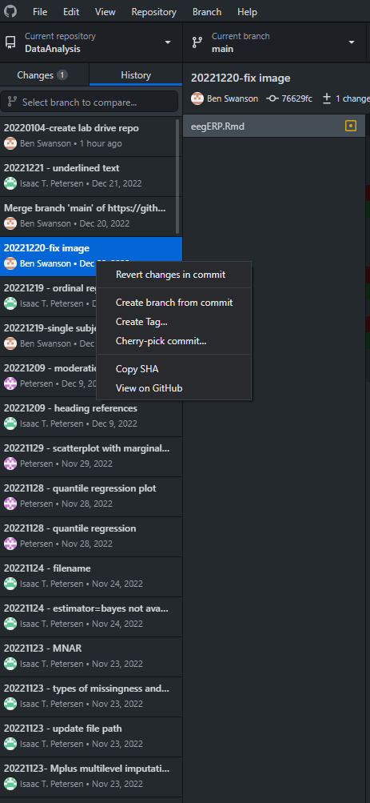

For code below, Open Git (or Powershell, Terminal,
Command Prompt, etc.) in directory of repository and use the relevant
code.
1 Why It is Important to
Use Git/Version Control
There are many reasons why it is important to use git/version
control:
It (GitHub/GitLab) provides backups of all
files in the cloud
It (GitHub/GitLab) allows you to access
the files in the cloud from any computer with access to the internet,
even if you are away from your local computer
Version control provides history of all (committed) changes made to
all files
If you make a mistake in your code, you can easily revert to a prior
version because you took snapshots (commits) of your files!
You don’t need to keep all the “commented out” lines of code
This allows you to write cleaner code, because you can remove
commented out lines of code, knowing that you can easily recover them in
your commit history
You don’t have to keep files or folders named “project_old” or
whatever
This allows you to keep cleaner file/folder directories for your
projects
Git keeps all files for the project self-contained,
which helps increase reproducibility
It (GitHub/GitLab) allows easier
collaboration with others on the project
It (GitHub/GitLab) allows easier sharing
with outside researchers
For expiration date, leave it blank (or set it for as late an
expiration date as possible)
For scopes, select everything
When cloning a repository from UI’s GitLab instance
using GitHub Desktop, GitHub Desktop will ask
for your username and password. Enter your HawkID as your username (or
your GitHub.com username if different) and your UI GitLab
Personal Access Token as your password.
2.2 Best practices
working with version control
Create a new repository (repo) whenever you start a new project
Follow the Petersen Lab template for how to structure your repo
(folder structure, .gitignore file, etc.):
Each time you want to work on the files in the repo, follow this
cycle:
Using the GitHub Desktop app, sync the repo files from
the cloud to the repo on your local computer (i.e., fetch any repo
updates to your local machine from the cloud)
Make sure to do this before many code changes so you are working
with the latest version of files
Do your work on the repo: make any code/file/folder additions,
changes, or deletions
Using the GitHub Desktop app, commit the changes
Commit changes to the cloud early and often; when deciding what to
commit and when, try to group “similar changes” into the same commit
(“like goes with like”)
Use a separate “commit” for each separable “functional unit”
changed
Using the GitHub Desktop app, sync the repo files from
your local computer to the repo on the cloud (i.e., push all of your
committed changes to the cloud)
Never leave file changes uncommitted or unsynced when you stop
working on the repo for the day!
2.3 Instructions for
using GitHub Desktop app with GitLab
Click Clone in right-hand corner, select
Clone with HTTPS
Open GitHub Desktop App and click File,
Clone Repository
Click the URL tab
Paste in the URL
Navigate to where you want to save it
The recommended location for your repos is to create a folder titled
GitHub in your Documents folder, and to put
repos in the GitHub folder (by default: PC:
C:/Users/[USERNAME]/Documents/GitHub/; Mac:
/Users/[user]/Documents/GitHub/) because various lab
scripts try to read the lab functions from this location; it is
NOT recommended to put git repos in a OneDrive
folder because git
files tend not to play nice with syncing services (e.g., OneDrive,
Dropbox)
Click Clone
Enter your GitLab username as your username and your
Personal Access Token as your password
2.7 How to add, modify,
or delete files in a repo
Open relevant repo in GitHub Desktop app
Pull any repo updates from the server to the local files (“Fetch
origin”, “Pull origin”)
Make necessary additions, modifications, and deletions to the
files
Create commits for all changes in GitHub Desktop app
(one commit per substantive change): Enter “Summary” and “Commit to
master”
After making all changes and commits, push local file changes to the
server using GitHub Desktop (“Fetch origin”, “Push
origin”)
2.8 How to collaborate
with others
Navigate to the repo on the UI GitLab website
When in the repo, click “Settings”
Click “Members”
Add the Collaborator
2.9 How to create a pull
request
To make/propose changes to a repo that you do not have write
permissions for, you need to create a pull request.
The owner of the repo will review your changes and decide whether to
accept them or whether additional changes are needed.
You can also create a pull request if you have write permissions to
the repo. This can be useful when collaborating on code with multiple
people. To do this, first, create a new branch. Then, make your changes
in the new branch. After making your changes, create a pull request to
merge the changes in the new branch into the main branch.
Note: If you are having problems making pull requests that show up
for owner of the original repo, you might need to delete your forked
repo and re-fork the original repo.
2.10 How to clone a repo
into local directory with a different folder name (directory must be
empty)
Go to “Transfer project”, and select the location/group/subgroup you
want to transfer the repo to under “Select a new namespace”
In the local repo, edit the repo URL in the .git/config
file
When asked for your password, enter your username (HawkID) and
GitLab Personal Access Token
2.12 How to use large
file storage (LFS)
In GitLab, we use large file storage (LFS) to store
large files. In GitHub, we do not use LSS to store large
files, because the University does not have an Enterprise agreement with
GitHub (thus, we would have to pay to use it). As a
consequence, individual files hosted in a GitHub repo must
be less than 50 MB in size. By contrast, individual files hosted in a
GitLab repo may be larger than 50 MB.
To set up LFS in for a GitLab repo, follow these
steps:
Make sure the large files are not in the repo yet.
In GitHub Desktop, open the repo you want to use LFS
for
In GitHub Desktop, select the Repository
tab, then select Command Prompt or similar
git lfs install # initialize the Git LFS project
git lfs track "*.Rdata" # select the file extensions that you want to treat as large files
This should have created a .gitattributes file in the
repo. In GitHub Desktop, commit and push the
.gitattributes file to the cloud version of the repo.
Copy the large files into the repo.
In GitHub Desktop, commit and push the large file to
the cloud version of the repo.
git add . # add the large file to the project
git commit -am "insert name of commit message here" # commit the file meta data
git push origin master # sync the git repo and large file to the GitLab server
When asked for credentials, use your HawkID as your username and
your personal access token as your password
2.13 How to create a new
repository on a shared network drive
Create a repo on GitHub or GitLab
online
Open Git Bash on the desktop
Using Git Bash, set the current directory to the path
where the new repo will be. For example, use the following command to
clone to the School Readiness Study
cd "R:\Lab\Studies\School Readiness Study"
Next, go to GitLab or GitHub online and
obtain the HTTPS URL to the new repository that was created. Clone the
repository with the HTTPS link using Git Bash with the
following command
git clone (HTTPS Link)
2.14 How to revert
changes to a previous commit
Open the Github Desktop and navigate to the repository
you would like to revert changes for
Next, click the history tab
Right click the commit you would like to revert back to, and select
revert changes
Push the changes to the repo to complete the revision

revert changes
2.15 How to perform a
partial commit
In GitHub Desktop, click the desired lines in the
gutter
Create the commit, and leave the other changes for you to continue
working on.
For expiration date, leave it blank (or set it for as late an
expiration date as possible)
For scopes, select everything
When cloning a repository from UI’s GitLab instance
using GitHub Desktop, GitHub Desktop will ask
for your username and password. Enter your HawkID as your username and
your UI GitLab Personal Access Token as your password.
3.2 GitHub trying to
connect to git config in another user’s User folder
To resolve, ensure that the HOME environment variable is
set to your user folder (assuming that it is not a shared computer)
To do so: - Type “Environment Variables” into the search bar of your
Windows task bar - Click “Open” under the result of “Edit the system
environment variables” - Enter an admin user/password when prompted -
Click “Environment Variables” at the bottom right corner of the popup
window that should open after entering admin credentials - Find the
HOME environment variable and click it to select
(highlighted blue) - Click “Edit” and update the path to match your
Users folder
3.3GitHub
shows all files as being changed even though the files haven’t
changed